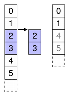

QAbstractItemModel Class
The QAbstractItemModel class provides the abstract interface for item model classes. More...
| Header: | #include <QAbstractItemModel> |
| CMake: | find_package(Qt6 REQUIRED COMPONENTS Core) target_link_libraries(mytarget PRIVATE Qt6::Core) |
| qmake: | QT += core |
| Inherits: | QObject |
| Inherited By: | QAbstractItemModelReplica, QAbstractListModel, QAbstractProxyModel, QAbstractTableModel, QConcatenateTablesProxyModel, QFileSystemModel, QHelpContentModel, QPdfBookmarkModel, and QStandardItemModel |
Public Types
| enum class | CheckIndexOption { NoOption, IndexIsValid, DoNotUseParent, ParentIsInvalid } |
| flags | CheckIndexOptions |
| enum | LayoutChangeHint { NoLayoutChangeHint, VerticalSortHint, HorizontalSortHint } |
Public Functions
| QAbstractItemModel(QObject *parent = nullptr) | |
| virtual | ~QAbstractItemModel() |
| virtual QModelIndex | buddy(const QModelIndex &index) const |
| virtual bool | canDropMimeData(const QMimeData *data, Qt::DropAction action, int row, int column, const QModelIndex &parent) const |
| virtual bool | canFetchMore(const QModelIndex &parent) const |
| bool | checkIndex(const QModelIndex &index, QAbstractItemModel::CheckIndexOptions options = CheckIndexOption::NoOption) const |
(since 6.0) virtual bool | clearItemData(const QModelIndex &index) |
| virtual int | columnCount(const QModelIndex &parent = QModelIndex()) const = 0 |
| virtual QVariant | data(const QModelIndex &index, int role = Qt::DisplayRole) const = 0 |
| virtual bool | dropMimeData(const QMimeData *data, Qt::DropAction action, int row, int column, const QModelIndex &parent) |
| virtual void | fetchMore(const QModelIndex &parent) |
| virtual Qt::ItemFlags | flags(const QModelIndex &index) const |
| virtual bool | hasChildren(const QModelIndex &parent = QModelIndex()) const |
| bool | hasIndex(int row, int column, const QModelIndex &parent = QModelIndex()) const |
| virtual QVariant | headerData(int section, Qt::Orientation orientation, int role = Qt::DisplayRole) const |
| virtual QModelIndex | index(int row, int column, const QModelIndex &parent = QModelIndex()) const = 0 |
| bool | insertColumn(int column, const QModelIndex &parent = QModelIndex()) |
| virtual bool | insertColumns(int column, int count, const QModelIndex &parent = QModelIndex()) |
| bool | insertRow(int row, const QModelIndex &parent = QModelIndex()) |
| virtual bool | insertRows(int row, int count, const QModelIndex &parent = QModelIndex()) |
| virtual QMap<int, QVariant> | itemData(const QModelIndex &index) const |
| virtual QModelIndexList | match(const QModelIndex &start, int role, const QVariant &value, int hits = 1, Qt::MatchFlags flags = Qt::MatchFlags(Qt::MatchStartsWith|Qt::MatchWrap)) const |
| virtual QMimeData * | mimeData(const QModelIndexList &indexes) const |
| virtual QStringList | mimeTypes() const |
| bool | moveColumn(const QModelIndex &sourceParent, int sourceColumn, const QModelIndex &destinationParent, int destinationChild) |
| virtual bool | moveColumns(const QModelIndex &sourceParent, int sourceColumn, int count, const QModelIndex &destinationParent, int destinationChild) |
| bool | moveRow(const QModelIndex &sourceParent, int sourceRow, const QModelIndex &destinationParent, int destinationChild) |
| virtual bool | moveRows(const QModelIndex &sourceParent, int sourceRow, int count, const QModelIndex &destinationParent, int destinationChild) |
(since 6.0) virtual void | multiData(const QModelIndex &index, QModelRoleDataSpan roleDataSpan) const |
| virtual QModelIndex | parent(const QModelIndex &index) const = 0 |
| bool | removeColumn(int column, const QModelIndex &parent = QModelIndex()) |
| virtual bool | removeColumns(int column, int count, const QModelIndex &parent = QModelIndex()) |
| bool | removeRow(int row, const QModelIndex &parent = QModelIndex()) |
| virtual bool | removeRows(int row, int count, const QModelIndex &parent = QModelIndex()) |
| virtual QHash<int, QByteArray> | roleNames() const |
| virtual int | rowCount(const QModelIndex &parent = QModelIndex()) const = 0 |
| virtual bool | setData(const QModelIndex &index, const QVariant &value, int role = Qt::EditRole) |
| virtual bool | setHeaderData(int section, Qt::Orientation orientation, const QVariant &value, int role = Qt::EditRole) |
| virtual bool | setItemData(const QModelIndex &index, const QMap<int, QVariant> &roles) |
| virtual QModelIndex | sibling(int row, int column, const QModelIndex &index) const |
| virtual void | sort(int column, Qt::SortOrder order = Qt::AscendingOrder) |
| virtual QSize | span(const QModelIndex &index) const |
| virtual Qt::DropActions | supportedDragActions() const |
| virtual Qt::DropActions | supportedDropActions() const |
Public Slots
Signals
| void | columnsAboutToBeInserted(const QModelIndex &parent, int first, int last) |
| void | columnsAboutToBeMoved(const QModelIndex &sourceParent, int sourceStart, int sourceEnd, const QModelIndex &destinationParent, int destinationColumn) |
| void | columnsAboutToBeRemoved(const QModelIndex &parent, int first, int last) |
| void | columnsInserted(const QModelIndex &parent, int first, int last) |
| void | columnsMoved(const QModelIndex &sourceParent, int sourceStart, int sourceEnd, const QModelIndex &destinationParent, int destinationColumn) |
| void | columnsRemoved(const QModelIndex &parent, int first, int last) |
| void | dataChanged(const QModelIndex &topLeft, const QModelIndex &bottomRight, const QList<int> &roles = QList<int>()) |
| void | headerDataChanged(Qt::Orientation orientation, int first, int last) |
| void | layoutAboutToBeChanged(const QList<QPersistentModelIndex> &parents = QList<QPersistentModelIndex>(), QAbstractItemModel::LayoutChangeHint hint = QAbstractItemModel::NoLayoutChangeHint) |
| void | layoutChanged(const QList<QPersistentModelIndex> &parents = QList<QPersistentModelIndex>(), QAbstractItemModel::LayoutChangeHint hint = QAbstractItemModel::NoLayoutChangeHint) |
| void | modelAboutToBeReset() |
| void | modelReset() |
| void | rowsAboutToBeInserted(const QModelIndex &parent, int start, int end) |
| void | rowsAboutToBeMoved(const QModelIndex &sourceParent, int sourceStart, int sourceEnd, const QModelIndex &destinationParent, int destinationRow) |
| void | rowsAboutToBeRemoved(const QModelIndex &parent, int first, int last) |
| void | rowsInserted(const QModelIndex &parent, int first, int last) |
| void | rowsMoved(const QModelIndex &sourceParent, int sourceStart, int sourceEnd, const QModelIndex &destinationParent, int destinationRow) |
| void | rowsRemoved(const QModelIndex &parent, int first, int last) |
Protected Functions
| void | beginInsertColumns(const QModelIndex &parent, int first, int last) |
| void | beginInsertRows(const QModelIndex &parent, int first, int last) |
| bool | beginMoveColumns(const QModelIndex &sourceParent, int sourceFirst, int sourceLast, const QModelIndex &destinationParent, int destinationChild) |
| bool | beginMoveRows(const QModelIndex &sourceParent, int sourceFirst, int sourceLast, const QModelIndex &destinationParent, int destinationChild) |
| void | beginRemoveColumns(const QModelIndex &parent, int first, int last) |
| void | beginRemoveRows(const QModelIndex &parent, int first, int last) |
| void | beginResetModel() |
| void | changePersistentIndex(const QModelIndex &from, const QModelIndex &to) |
| void | changePersistentIndexList(const QModelIndexList &from, const QModelIndexList &to) |
| QModelIndex | createIndex(int row, int column, const void *ptr = nullptr) const |
| QModelIndex | createIndex(int row, int column, quintptr id) const |
| void | endInsertColumns() |
| void | endInsertRows() |
| void | endMoveColumns() |
| void | endMoveRows() |
| void | endRemoveColumns() |
| void | endRemoveRows() |
| void | endResetModel() |
| QModelIndexList | persistentIndexList() const |
Protected Slots
| virtual void | resetInternalData() |
Detailed Description
The QAbstractItemModel class defines the standard interface that item models must use to be able to interoperate with other components in the model/view architecture. It is not supposed to be instantiated directly. Instead, you should subclass it to create new models.
The QAbstractItemModel class is one of the Model/View Classes and is part of Qt's model/view framework. It can be used as the underlying data model for the item view elements in QML or the item view classes in the Qt Widgets module.
If you need a model to use with an item view such as QML's List View element or the C++ widgets QListView or QTableView, you should consider subclassing QAbstractListModel or QAbstractTableModel instead of this class.
The underlying data model is exposed to views and delegates as a hierarchy of tables. If you do not make use of the hierarchy, then the model is a simple table of rows and columns. Each item has a unique index specified by a QModelIndex.

Every item of data that can be accessed via a model has an associated model index. You can obtain this model index using the index() function. Each index may have a sibling() index; child items have a parent() index.
Each item has a number of data elements associated with it and they can be retrieved by specifying a role (see Qt::ItemDataRole) to the model's data() function. Data for all available roles can be obtained at the same time using the itemData() function.
Data for each role is set using a particular Qt::ItemDataRole. Data for individual roles are set individually with setData(), or they can be set for all roles with setItemData().
Items can be queried with flags() (see Qt::ItemFlag) to see if they can be selected, dragged, or manipulated in other ways.
If an item has child objects, hasChildren() returns true for the corresponding index.
The model has a rowCount() and a columnCount() for each level of the hierarchy. Rows and columns can be inserted and removed with insertRows(), insertColumns(), removeRows(), and removeColumns().
The model emits signals to indicate changes. For example, dataChanged() is emitted whenever items of data made available by the model are changed. Changes to the headers supplied by the model cause headerDataChanged() to be emitted. If the structure of the underlying data changes, the model can emit layoutChanged() to indicate to any attached views that they should redisplay any items shown, taking the new structure into account.
The items available through the model can be searched for particular data using the match() function.
To sort the model, you can use sort().
Subclassing
Note: Some general guidelines for subclassing models are available in the Model Subclassing Reference.
When subclassing QAbstractItemModel, at the very least you must implement index(), parent(), rowCount(), columnCount(), and data(). These functions are used in all read-only models, and form the basis of editable models.
You can also reimplement hasChildren() to provide special behavior for models where the implementation of rowCount() is expensive. This makes it possible for models to restrict the amount of data requested by views, and can be used as a way to implement lazy population of model data.
To enable editing in your model, you must also implement setData(), and reimplement flags() to ensure that ItemIsEditable is returned. You can also reimplement headerData() and setHeaderData() to control the way the headers for your model are presented.
The dataChanged() and headerDataChanged() signals must be emitted explicitly when reimplementing the setData() and setHeaderData() functions, respectively.
Custom models need to create model indexes for other components to use. To do this, call createIndex() with suitable row and column numbers for the item, and an identifier for it, either as a pointer or as an integer value. The combination of these values must be unique for each item. Custom models typically use these unique identifiers in other reimplemented functions to retrieve item data and access information about the item's parents and children. See the Simple Tree Model Example for more information about unique identifiers.
It is not necessary to support every role defined in Qt::ItemDataRole. Depending on the type of data contained within a model, it may only be useful to implement the data() function to return valid information for some of the more common roles. Most models provide at least a textual representation of item data for the Qt::DisplayRole, and well-behaved models should also provide valid information for the Qt::ToolTipRole and Qt::WhatsThisRole. Supporting these roles enables models to be used with standard Qt views. However, for some models that handle highly-specialized data, it may be appropriate to provide data only for user-defined roles.
Models that provide interfaces to resizable data structures can provide implementations of insertRows(), removeRows(), insertColumns(),and removeColumns(). When implementing these functions, it is important to notify any connected views about changes to the model's dimensions both before and after they occur:
- An insertRows() implementation must call beginInsertRows() before inserting new rows into the data structure, and endInsertRows() immediately afterwards.
- An insertColumns() implementation must call beginInsertColumns() before inserting new columns into the data structure, and endInsertColumns() immediately afterwards.
- A removeRows() implementation must call beginRemoveRows() before the rows are removed from the data structure, and endRemoveRows() immediately afterwards.
- A removeColumns() implementation must call beginRemoveColumns() before the columns are removed from the data structure, and endRemoveColumns() immediately afterwards.
The private signals that these functions emit give attached components the chance to take action before any data becomes unavailable. The encapsulation of the insert and remove operations with these begin and end functions also enables the model to manage persistent model indexes correctly. If you want selections to be handled properly, you must ensure that you call these functions. If you insert or remove an item with children, you do not need to call these functions for the child items. In other words, the parent item will take care of its child items.
To create models that populate incrementally, you can reimplement fetchMore() and canFetchMore(). If the reimplementation of fetchMore() adds rows to the model, beginInsertRows() and endInsertRows() must be called.
Thread safety
Being a subclass of QObject, QAbstractItemModel is not thread-safe. Any QAbstractItemModel model-related API should only be called from the thread the model object lives in. If the QAbstractItemModel is connected with a view, that means the GUI thread, as that is where the view lives, and it will call into the model from the GUI thread. Using a background thread to populate or modify the contents of a model is possible, but requires care, as the background thread cannot call any model-related API directly. Instead, you should queue the updates and apply them in the main thread. This can be done with queued connections.
See also Model Classes, Model Subclassing Reference, QModelIndex, QAbstractItemView, Using drag and drop with item views, Simple Tree Model Example, Editable Tree Model Example, and Fetch More Example.
Member Type Documentation
enum class QAbstractItemModel::CheckIndexOption
flags QAbstractItemModel::CheckIndexOptions
This enum can be used to control the checks performed by QAbstractItemModel::checkIndex().
| Constant | Value | Description |
|---|---|---|
QAbstractItemModel::CheckIndexOption::NoOption | 0x0000 | No check options are specified. |
QAbstractItemModel::CheckIndexOption::IndexIsValid | 0x0001 | The model index passed to QAbstractItemModel::checkIndex() is checked to be a valid model index. |
QAbstractItemModel::CheckIndexOption::DoNotUseParent | 0x0002 | Does not perform any check involving the usage of the parent of the index passed to QAbstractItemModel::checkIndex(). |
QAbstractItemModel::CheckIndexOption::ParentIsInvalid | 0x0004 | The parent of the model index passed to QAbstractItemModel::checkIndex() is checked to be an invalid model index. If both this option and DoNotUseParent are specified, then this option is ignored. |
The CheckIndexOptions type is a typedef for QFlags<CheckIndexOption>. It stores an OR combination of CheckIndexOption values.
enum QAbstractItemModel::LayoutChangeHint
This enum describes the way the model changes layout.
| Constant | Value | Description |
|---|---|---|
QAbstractItemModel::NoLayoutChangeHint | 0 | No hint is available. |
QAbstractItemModel::VerticalSortHint | 1 | Rows are being sorted. |
QAbstractItemModel::HorizontalSortHint | 2 | Columns are being sorted. |
Note that VerticalSortHint and HorizontalSortHint carry the meaning that items are being moved within the same parent, not moved to a different parent in the model, and not filtered out or in.
Member Function Documentation
[explicit] QAbstractItemModel::QAbstractItemModel(QObject *parent = nullptr)
Constructs an abstract item model with the given parent.
[virtual noexcept] QAbstractItemModel::~QAbstractItemModel()
Destroys the abstract item model.
[protected] void QAbstractItemModel::beginInsertColumns(const QModelIndex &parent, int first, int last)
Begins a column insertion operation.
When reimplementing insertColumns() in a subclass, you must call this function before inserting data into the model's underlying data store.
The parent index corresponds to the parent into which the new columns are inserted; first and last are the column numbers of the new columns will have after they have been inserted.
 Inserting columns Inserting columns | Specify the first and last column numbers for the span of columns you want to insert into an item in a model. For example, as shown in the diagram, we insert three columns before column 4, so first is 4 and last is 6: beginInsertColumns(parent, 4, 6); This inserts the three new columns as columns 4, 5, and 6. |
 Appending columns Appending columns | To append columns, insert them after the last column. For example, as shown in the diagram, we append three columns to a collection of six existing columns (ending in column 5), so first is 6 and last is 8: beginInsertColumns(parent, 6, 8); This appends the two new columns as columns 6, 7, and 8. |
Note: This function emits the columnsAboutToBeInserted() signal which connected views (or proxies) must handle before the data is inserted. Otherwise, the views may end up in an invalid state.
See also endInsertColumns().
[protected] void QAbstractItemModel::beginInsertRows(const QModelIndex &parent, int first, int last)
Begins a row insertion operation.
When reimplementing insertRows() in a subclass, you must call this function before inserting data into the model's underlying data store.
The parent index corresponds to the parent into which the new rows are inserted; first and last are the row numbers that the new rows will have after they have been inserted.
 Inserting rows Inserting rows | Specify the first and last row numbers for the span of rows you want to insert into an item in a model. For example, as shown in the diagram, we insert three rows before row 2, so first is 2 and last is 4: beginInsertRows(parent, 2, 4); This inserts the three new rows as rows 2, 3, and 4. |
 Appending rows Appending rows | To append rows, insert them after the last row. For example, as shown in the diagram, we append two rows to a collection of 4 existing rows (ending in row 3), so first is 4 and last is 5: beginInsertRows(parent, 4, 5); This appends the two new rows as rows 4 and 5. |
Note: This function emits the rowsAboutToBeInserted() signal which connected views (or proxies) must handle before the data is inserted. Otherwise, the views may end up in an invalid state.
See also endInsertRows().
[protected] bool QAbstractItemModel::beginMoveColumns(const QModelIndex &sourceParent, int sourceFirst, int sourceLast, const QModelIndex &destinationParent, int destinationChild)
Begins a column move operation.
When reimplementing a subclass, this method simplifies moving entities in your model. This method is responsible for moving persistent indexes in the model, which you would otherwise be required to do yourself. Using beginMoveColumns and endMoveColumns is an alternative to emitting layoutAboutToBeChanged and layoutChanged directly along with changePersistentIndex.
The sourceParent index corresponds to the parent from which the columns are moved; sourceFirst and sourceLast are the first and last column numbers of the columns to be moved. The destinationParent index corresponds to the parent into which those columns are moved. The destinationChild is the column to which the columns will be moved. That is, the index at column sourceFirst in sourceParent will become column destinationChild in destinationParent, followed by all other columns up to sourceLast.
However, when moving columns down in the same parent (sourceParent and destinationParent are equal), the columns will be placed before the destinationChild index. That is, if you wish to move columns 0 and 1 so they will become columns 1 and 2, destinationChild should be 3. In this case, the new index for the source column i (which is between sourceFirst and sourceLast) is equal to (destinationChild-sourceLast-1+i).
Note that if sourceParent and destinationParent are the same, you must ensure that the destinationChild is not within the range of sourceFirst and sourceLast + 1. You must also ensure that you do not attempt to move a column to one of its own children or ancestors. This method returns false if either condition is true, in which case you should abort your move operation.
See also endMoveColumns().
[protected] bool QAbstractItemModel::beginMoveRows(const QModelIndex &sourceParent, int sourceFirst, int sourceLast, const QModelIndex &destinationParent, int destinationChild)
Begins a row move operation.
When reimplementing a subclass, this method simplifies moving entities in your model. This method is responsible for moving persistent indexes in the model, which you would otherwise be required to do yourself. Using beginMoveRows and endMoveRows is an alternative to emitting layoutAboutToBeChanged and layoutChanged directly along with changePersistentIndex.
The sourceParent index corresponds to the parent from which the rows are moved; sourceFirst and sourceLast are the first and last row numbers of the rows to be moved. The destinationParent index corresponds to the parent into which those rows are moved. The destinationChild is the row to which the rows will be moved. That is, the index at row sourceFirst in sourceParent will become row destinationChild in destinationParent, followed by all other rows up to sourceLast.
However, when moving rows down in the same parent (sourceParent and destinationParent are equal), the rows will be placed before the destinationChild index. That is, if you wish to move rows 0 and 1 so they will become rows 1 and 2, destinationChild should be 3. In this case, the new index for the source row i (which is between sourceFirst and sourceLast) is equal to (destinationChild-sourceLast-1+i).
Note that if sourceParent and destinationParent are the same, you must ensure that the destinationChild is not within the range of sourceFirst and sourceLast + 1. You must also ensure that you do not attempt to move a row to one of its own children or ancestors. This method returns false if either condition is true, in which case you should abort your move operation.
 Moving rows to another parent Moving rows to another parent | Specify the first and last row numbers for the span of rows in the source parent you want to move in the model. Also specify the row in the destination parent to move the span to. For example, as shown in the diagram, we move three rows from row 2 to 4 in the source, so sourceFirst is 2 and sourceLast is 4. We move those items to above row 2 in the destination, so destinationChild is 2. beginMoveRows(sourceParent, 2, 4, destinationParent, 2); This moves the three rows rows 2, 3, and 4 in the source to become 2, 3 and 4 in the destination. Other affected siblings are displaced accordingly. |
 Moving rows to append to another parent Moving rows to append to another parent | To append rows to another parent, move them to after the last row. For example, as shown in the diagram, we move three rows to a collection of 6 existing rows (ending in row 5), so destinationChild is 6: beginMoveRows(sourceParent, 2, 4, destinationParent, 6); This moves the target rows to the end of the target parent as 6, 7 and 8. |
 Moving rows in the same parent up Moving rows in the same parent up | To move rows within the same parent, specify the row to move them to. For example, as shown in the diagram, we move one item from row 2 to row 0, so sourceFirst and sourceLast are 2 and destinationChild is 0. beginMoveRows(parent, 2, 2, parent, 0); Note that other rows may be displaced accordingly. Note also that when moving items within the same parent you should not attempt invalid or no-op moves. In the above example, item 2 is at row 2 before the move, so it cannot be moved to row 2 (where it is already) or row 3 (no-op as row 3 means above row 3, where it is already) |
 Moving rows in the same parent down Moving rows in the same parent down | To move rows within the same parent, specify the row to move them to. For example, as shown in the diagram, we move one item from row 2 to row 4, so sourceFirst and sourceLast are 2 and destinationChild is 4. beginMoveRows(parent, 2, 2, parent, 4); Note that other rows may be displaced accordingly. |
See also endMoveRows().
[protected] void QAbstractItemModel::beginRemoveColumns(const QModelIndex &parent, int first, int last)
Begins a column removal operation.
When reimplementing removeColumns() in a subclass, you must call this function before removing data from the model's underlying data store.
The parent index corresponds to the parent from which the new columns are removed; first and last are the column numbers of the first and last columns to be removed.
 Removing columns Removing columns | Specify the first and last column numbers for the span of columns you want to remove from an item in a model. For example, as shown in the diagram, we remove the three columns from column 4 to column 6, so first is 4 and last is 6: beginRemoveColumns(parent, 4, 6); |
Note: This function emits the columnsAboutToBeRemoved() signal which connected views (or proxies) must handle before the data is removed. Otherwise, the views may end up in an invalid state.
See also endRemoveColumns().
[protected] void QAbstractItemModel::beginRemoveRows(const QModelIndex &parent, int first, int last)
Begins a row removal operation.
When reimplementing removeRows() in a subclass, you must call this function before removing data from the model's underlying data store.
The parent index corresponds to the parent from which the new rows are removed; first and last are the row numbers of the rows to be removed.
|  Removing rows | Specify the first and last row numbers for the span of rows you want to remove from an item in a model. For example, as shown in the diagram, we remove the two rows from row 2 to row 3, so first is 2 and last is 3: beginRemoveRows(parent, 2, 3); |
Note: This function emits the rowsAboutToBeRemoved() signal which connected views (or proxies) must handle before the data is removed. Otherwise, the views may end up in an invalid state.
See also endRemoveRows().
[protected] void QAbstractItemModel::beginResetModel()
Begins a model reset operation.
A reset operation resets the model to its current state in any attached views.
Note: Any views attached to this model will be reset as well.
When a model is reset it means that any previous data reported from the model is now invalid and has to be queried for again. This also means that the current item and any selected items will become invalid.
When a model radically changes its data it can sometimes be easier to just call this function rather than emit dataChanged() to inform other components when the underlying data source, or its structure, has changed.
You must call this function before resetting any internal data structures in your model or proxy model.
This function emits the signal modelAboutToBeReset().
See also modelAboutToBeReset(), modelReset(), and endResetModel().
[virtual] QModelIndex QAbstractItemModel::buddy(const QModelIndex &index) const
Returns a model index for the buddy of the item represented by index. When the user wants to edit an item, the view will call this function to check whether another item in the model should be edited instead. Then, the view will construct a delegate using the model index returned by the buddy item.
The default implementation of this function has each item as its own buddy.
[virtual] bool QAbstractItemModel::canDropMimeData(const QMimeData *data, Qt::DropAction action, int row, int column, const QModelIndex &parent) const
Returns true if a model can accept a drop of the data. This default implementation only checks if data has at least one format in the list of mimeTypes() and if action is among the model's supportedDropActions().
Reimplement this function in your custom model, if you want to test whether the data can be dropped at row, column, parent with action. If you don't need that test, it is not necessary to reimplement this function.
See also dropMimeData() and Using drag and drop with item views.
[virtual invokable] bool QAbstractItemModel::canFetchMore(const QModelIndex &parent) const
Returns true if there is more data available for parent; otherwise returns false.
The default implementation always returns false.
If canFetchMore() returns true, the fetchMore() function should be called. This is the behavior of QAbstractItemView, for example.
Note: This function can be invoked via the meta-object system and from QML. See Q_INVOKABLE.
See also fetchMore().
[protected] void QAbstractItemModel::changePersistentIndex(const QModelIndex &from, const QModelIndex &to)
Changes the QPersistentModelIndex that is equal to the given from model index to the given to model index.
If no persistent model index equal to the given from model index was found, nothing is changed.
See also persistentIndexList() and changePersistentIndexList().
[protected] void QAbstractItemModel::changePersistentIndexList(const QModelIndexList &from, const QModelIndexList &to)
Changes the {QPersistentModelIndex}es that are equal to the indexes in the given from model index list to the given to model index list.
If no persistent model indexes equal to the indexes in the given from model index list are found, nothing is changed.
See also persistentIndexList() and changePersistentIndex().
bool QAbstractItemModel::checkIndex(const QModelIndex &index, QAbstractItemModel::CheckIndexOptions options = CheckIndexOption::NoOption) const
This function checks whether index is a legal model index for this model. A legal model index is either an invalid model index, or a valid model index for which all the following holds:
- the index' model is
this; - the index' row is greater or equal than zero;
- the index' row is less than the row count for the index' parent;
- the index' column is greater or equal than zero;
- the index' column is less than the column count for the index' parent.
The options argument may change some of these checks. If options contains IndexIsValid, then index must be a valid index; this is useful when reimplementing functions such as data() or setData(), which expect valid indexes.
If options contains DoNotUseParent, then the checks that would call parent() are omitted; this allows calling this function from a parent() reimplementation (otherwise, this would result in endless recursion and a crash).
If options does not contain DoNotUseParent, and it contains ParentIsInvalid, then an additional check is performed: the parent index is checked for not being valid. This is useful when implementing flat models such as lists or tables, where no model index should have a valid parent index.
This function returns true if all the checks succeeded, and false otherwise. This allows to use the function in Q_ASSERT and similar other debugging mechanisms. If some check failed, a warning message will be printed in the qt.core.qabstractitemmodel.checkindex logging category, containing some information that may be useful for debugging the failure.
Note: This function is a debugging helper for implementing your own item models. When developing complex models, as well as when building complicated model hierarchies (e.g. using proxy models), it is useful to call this function in order to catch bugs relative to illegal model indices (as defined above) accidentally passed to some QAbstractItemModel API.
Warning: Note that it's undefined behavior to pass illegal indices to item models, so applications must refrain from doing so, and not rely on any "defensive" programming that item models could employ to handle illegal indexes gracefully.
See also QModelIndex.
[virtual, since 6.0] bool QAbstractItemModel::clearItemData(const QModelIndex &index)
Removes the data stored in all the roles for the given index. Returns true if successful; otherwise returns false. The dataChanged() signal should be emitted if the data was successfully removed. The base class implementation returns false
This function was introduced in Qt 6.0.
See also data(), itemData(), setData(), and setItemData().
[pure virtual invokable] int QAbstractItemModel::columnCount(const QModelIndex &parent = QModelIndex()) const
Returns the number of columns for the children of the given parent.
In most subclasses, the number of columns is independent of the parent.
For example:
int MyModel::columnCount(const QModelIndex &parent) const { Q_UNUSED(parent); return 3; }
Note: When implementing a table based model, columnCount() should return 0 when the parent is valid.
Note: This function can be invoked via the meta-object system and from QML. See Q_INVOKABLE.
See also rowCount().
[private signal] void QAbstractItemModel::columnsAboutToBeInserted(const QModelIndex &parent, int first, int last)
This signal is emitted just before columns are inserted into the model. The new items will be positioned between first and last inclusive, under the given parent item.
Note: Components connected to this signal use it to adapt to changes in the model's dimensions. It can only be emitted by the QAbstractItemModel implementation, and cannot be explicitly emitted in subclass code.
Note: This is a private signal. It can be used in signal connections but cannot be emitted by the user.
See also insertColumns() and beginInsertColumns().
[private signal] void QAbstractItemModel::columnsAboutToBeMoved(const QModelIndex &sourceParent, int sourceStart, int sourceEnd, const QModelIndex &destinationParent, int destinationColumn)
This signal is emitted just before columns are moved within the model. The items that will be moved are those between sourceStart and sourceEnd inclusive, under the given sourceParent item. They will be moved to destinationParent starting at the column destinationColumn.
Note: Components connected to this signal use it to adapt to changes in the model's dimensions. It can only be emitted by the QAbstractItemModel implementation, and cannot be explicitly emitted in subclass code.
Note: This is a private signal. It can be used in signal connections but cannot be emitted by the user.
See also beginMoveRows().
[private signal] void QAbstractItemModel::columnsAboutToBeRemoved(const QModelIndex &parent, int first, int last)
This signal is emitted just before columns are removed from the model. The items to be removed are those between first and last inclusive, under the given parent item.
Note: Components connected to this signal use it to adapt to changes in the model's dimensions. It can only be emitted by the QAbstractItemModel implementation, and cannot be explicitly emitted in subclass code.
Note: This is a private signal. It can be used in signal connections but cannot be emitted by the user.
See also removeColumns() and beginRemoveColumns().
[private signal] void QAbstractItemModel::columnsInserted(const QModelIndex &parent, int first, int last)
This signal is emitted after columns have been inserted into the model. The new items are those between first and last inclusive, under the given parent item.
Note: Components connected to this signal use it to adapt to changes in the model's dimensions. It can only be emitted by the QAbstractItemModel implementation, and cannot be explicitly emitted in subclass code.
Note: This is a private signal. It can be used in signal connections but cannot be emitted by the user.
See also insertColumns() and beginInsertColumns().
[private signal] void QAbstractItemModel::columnsMoved(const QModelIndex &sourceParent, int sourceStart, int sourceEnd, const QModelIndex &destinationParent, int destinationColumn)
This signal is emitted after columns have been moved within the model. The items between sourceStart and sourceEnd inclusive, under the given sourceParent item have been moved to destinationParent starting at the column destinationColumn.
Note: Components connected to this signal use it to adapt to changes in the model's dimensions. It can only be emitted by the QAbstractItemModel implementation, and cannot be explicitly emitted in subclass code.
Note: This is a private signal. It can be used in signal connections but cannot be emitted by the user.
See also beginMoveRows().
[private signal] void QAbstractItemModel::columnsRemoved(const QModelIndex &parent, int first, int last)
This signal is emitted after columns have been removed from the model. The removed items are those between first and last inclusive, under the given parent item.
Note: Components connected to this signal use it to adapt to changes in the model's dimensions. It can only be emitted by the QAbstractItemModel implementation, and cannot be explicitly emitted in subclass code.
Note: This is a private signal. It can be used in signal connections but cannot be emitted by the user.
See also removeColumns() and beginRemoveColumns().
[protected] QModelIndex QAbstractItemModel::createIndex(int row, int column, const void *ptr = nullptr) const
Creates a model index for the given row and column with the internal pointer ptr.
When using a QSortFilterProxyModel, its indexes have their own internal pointer. It is not advisable to access this internal pointer outside of the model. Use the data() function instead.
This function provides a consistent interface that model subclasses must use to create model indexes.
[protected] QModelIndex QAbstractItemModel::createIndex(int row, int column, quintptr id) const
Creates a model index for the given row and column with the internal identifier, id.
This function provides a consistent interface that model subclasses must use to create model indexes.
See also QModelIndex::internalId().
[pure virtual invokable] QVariant QAbstractItemModel::data(const QModelIndex &index, int role = Qt::DisplayRole) const
Returns the data stored under the given role for the item referred to by the index.
Note: If you do not have a value to return, return an invalid (default-constructed) QVariant.
Note: This function can be invoked via the meta-object system and from QML. See Q_INVOKABLE.
See also Qt::ItemDataRole, setData(), and headerData().
[signal] void QAbstractItemModel::dataChanged(const QModelIndex &topLeft, const QModelIndex &bottomRight, const QList<int> &roles = QList<int>())
This signal is emitted whenever the data in an existing item changes.
If the items are of the same parent, the affected ones are those between topLeft and bottomRight inclusive. If the items do not have the same parent, the behavior is undefined.
When reimplementing the setData() function, this signal must be emitted explicitly.
The optional roles argument can be used to specify which data roles have actually been modified. An empty vector in the roles argument means that all roles should be considered modified. The order of elements in the roles argument does not have any relevance.
See also headerDataChanged(), setData(), and layoutChanged().
[virtual] bool QAbstractItemModel::dropMimeData(const QMimeData *data, Qt::DropAction action, int row, int column, const QModelIndex &parent)
Handles the data supplied by a drag and drop operation that ended with the given action.
Returns true if the data and action were handled by the model; otherwise returns false.
The specified row, column and parent indicate the location of an item in the model where the operation ended. It is the responsibility of the model to complete the action at the correct location.
For instance, a drop action on an item in a QTreeView can result in new items either being inserted as children of the item specified by row, column, and parent, or as siblings of the item.
When row and column are -1 it means that the dropped data should be considered as dropped directly on parent. Usually this will mean appending the data as child items of parent. If row and column are greater than or equal zero, it means that the drop occurred just before the specified row and column in the specified parent.
The mimeTypes() member is called to get the list of acceptable MIME types. This default implementation assumes the default implementation of mimeTypes(), which returns a single default MIME type. If you reimplement mimeTypes() in your custom model to return multiple MIME types, you must reimplement this function to make use of them.
See also supportedDropActions(), canDropMimeData(), and Using drag and drop with item views.
[protected] void QAbstractItemModel::endInsertColumns()
Ends a column insertion operation.
When reimplementing insertColumns() in a subclass, you must call this function after inserting data into the model's underlying data store.
See also beginInsertColumns().
[protected] void QAbstractItemModel::endInsertRows()
Ends a row insertion operation.
When reimplementing insertRows() in a subclass, you must call this function after inserting data into the model's underlying data store.
See also beginInsertRows().
[protected] void QAbstractItemModel::endMoveColumns()
Ends a column move operation.
When implementing a subclass, you must call this function after moving data within the model's underlying data store.
See also beginMoveColumns().
[protected] void QAbstractItemModel::endMoveRows()
Ends a row move operation.
When implementing a subclass, you must call this function after moving data within the model's underlying data store.
See also beginMoveRows().
[protected] void QAbstractItemModel::endRemoveColumns()
Ends a column removal operation.
When reimplementing removeColumns() in a subclass, you must call this function after removing data from the model's underlying data store.
See also beginRemoveColumns().
[protected] void QAbstractItemModel::endRemoveRows()
Ends a row removal operation.
When reimplementing removeRows() in a subclass, you must call this function after removing data from the model's underlying data store.
See also beginRemoveRows().
[protected] void QAbstractItemModel::endResetModel()
Completes a model reset operation.
You must call this function after resetting any internal data structure in your model or proxy model.
This function emits the signal modelReset().
See also beginResetModel().
[virtual invokable] void QAbstractItemModel::fetchMore(const QModelIndex &parent)
Fetches any available data for the items with the parent specified by the parent index.
Reimplement this if you are populating your model incrementally.
The default implementation does nothing.
Note: This function can be invoked via the meta-object system and from QML. See Q_INVOKABLE.
See also canFetchMore().
[virtual invokable] Qt::ItemFlags QAbstractItemModel::flags(const QModelIndex &index) const
Returns the item flags for the given index.
The base class implementation returns a combination of flags that enables the item (ItemIsEnabled) and allows it to be selected (ItemIsSelectable).
Note: This function can be invoked via the meta-object system and from QML. See Q_INVOKABLE.
See also Qt::ItemFlags.
[virtual invokable] bool QAbstractItemModel::hasChildren(const QModelIndex &parent = QModelIndex()) const
Returns true if parent has any children; otherwise returns false.
Use rowCount() on the parent to find out the number of children.
Note that it is undefined behavior to report that a particular index hasChildren with this method if the same index has the flag Qt::ItemNeverHasChildren set.
Note: This function can be invoked via the meta-object system and from QML. See Q_INVOKABLE.
See also parent() and index().
[invokable] bool QAbstractItemModel::hasIndex(int row, int column, const QModelIndex &parent = QModelIndex()) const
Returns true if the model returns a valid QModelIndex for row and column with parent, otherwise returns false.
Note: This function can be invoked via the meta-object system and from QML. See Q_INVOKABLE.
[virtual invokable] QVariant QAbstractItemModel::headerData(int section, Qt::Orientation orientation, int role = Qt::DisplayRole) const
Returns the data for the given role and section in the header with the specified orientation.
For horizontal headers, the section number corresponds to the column number. Similarly, for vertical headers, the section number corresponds to the row number.
Note: This function can be invoked via the meta-object system and from QML. See Q_INVOKABLE.
See also Qt::ItemDataRole, setHeaderData(), and QHeaderView.
[signal] void QAbstractItemModel::headerDataChanged(Qt::Orientation orientation, int first, int last)
This signal is emitted whenever a header is changed. The orientation indicates whether the horizontal or vertical header has changed. The sections in the header from the first to the last need to be updated.
When reimplementing the setHeaderData() function, this signal must be emitted explicitly.
If you are changing the number of columns or rows you do not need to emit this signal, but use the begin/end functions (refer to the section on subclassing in the QAbstractItemModel class description for details).
See also headerData(), setHeaderData(), and dataChanged().
[pure virtual invokable] QModelIndex QAbstractItemModel::index(int row, int column, const QModelIndex &parent = QModelIndex()) const
Returns the index of the item in the model specified by the given row, column and parent index.
When reimplementing this function in a subclass, call createIndex() to generate model indexes that other components can use to refer to items in your model.
Note: This function can be invoked via the meta-object system and from QML. See Q_INVOKABLE.
See also createIndex().
[invokable] bool QAbstractItemModel::insertColumn(int column, const QModelIndex &parent = QModelIndex())
Inserts a single column before the given column in the child items of the parent specified.
Returns true if the column is inserted; otherwise returns false.
Note: This function can be invoked via the meta-object system and from QML. See Q_INVOKABLE.
See also insertColumns(), insertRow(), and removeColumn().
[virtual invokable] bool QAbstractItemModel::insertColumns(int column, int count, const QModelIndex &parent = QModelIndex())
On models that support this, inserts count new columns into the model before the given column. The items in each new column will be children of the item represented by the parent model index.
If column is 0, the columns are prepended to any existing columns.
If column is columnCount(), the columns are appended to any existing columns.
If parent has no children, a single row with count columns is inserted.
Returns true if the columns were successfully inserted; otherwise returns false.
The base class implementation does nothing and returns false.
If you implement your own model, you can reimplement this function if you want to support insertions. Alternatively, you can provide your own API for altering the data.
Note: This function can be invoked via the meta-object system and from QML. See Q_INVOKABLE.
See also insertRows(), removeColumns(), beginInsertColumns(), and endInsertColumns().
[invokable] bool QAbstractItemModel::insertRow(int row, const QModelIndex &parent = QModelIndex())
Inserts a single row before the given row in the child items of the parent specified.
Note: This function calls the virtual method insertRows.
Returns true if the row is inserted; otherwise returns false.
Note: This function can be invoked via the meta-object system and from QML. See Q_INVOKABLE.
See also insertRows(), insertColumn(), and removeRow().
[virtual invokable] bool QAbstractItemModel::insertRows(int row, int count, const QModelIndex &parent = QModelIndex())
Note: The base class implementation of this function does nothing and returns false.
On models that support this, inserts count rows into the model before the given row. Items in the new row will be children of the item represented by the parent model index.
If row is 0, the rows are prepended to any existing rows in the parent.
If row is rowCount(), the rows are appended to any existing rows in the parent.
If parent has no children, a single column with count rows is inserted.
Returns true if the rows were successfully inserted; otherwise returns false.
If you implement your own model, you can reimplement this function if you want to support insertions. Alternatively, you can provide your own API for altering the data. In either case, you will need to call beginInsertRows() and endInsertRows() to notify other components that the model has changed.
Note: This function can be invoked via the meta-object system and from QML. See Q_INVOKABLE.
See also insertColumns(), removeRows(), beginInsertRows(), and endInsertRows().
[virtual] QMap<int, QVariant> QAbstractItemModel::itemData(const QModelIndex &index) const
Returns a map with values for all predefined roles in the model for the item at the given index.
Reimplement this function if you want to extend the default behavior of this function to include custom roles in the map.
See also setItemData(), Qt::ItemDataRole, and data().
[signal] void QAbstractItemModel::layoutAboutToBeChanged(const QList<QPersistentModelIndex> &parents = QList<QPersistentModelIndex>(), QAbstractItemModel::LayoutChangeHint hint = QAbstractItemModel::NoLayoutChangeHint)
This signal is emitted just before the layout of a model is changed. Components connected to this signal use it to adapt to changes in the model's layout.
Subclasses should update any persistent model indexes after emitting layoutAboutToBeChanged().
The optional parents parameter is used to give a more specific notification about what parts of the layout of the model are changing. An empty list indicates a change to the layout of the entire model. The order of elements in the parents list is not significant. The optional hint parameter is used to give a hint about what is happening while the model is relayouting.
See also layoutChanged() and changePersistentIndex().
[signal] void QAbstractItemModel::layoutChanged(const QList<QPersistentModelIndex> &parents = QList<QPersistentModelIndex>(), QAbstractItemModel::LayoutChangeHint hint = QAbstractItemModel::NoLayoutChangeHint)
This signal is emitted whenever the layout of items exposed by the model has changed; for example, when the model has been sorted. When this signal is received by a view, it should update the layout of items to reflect this change.
When subclassing QAbstractItemModel or QAbstractProxyModel, ensure that you emit layoutAboutToBeChanged() before changing the order of items or altering the structure of the data you expose to views, and emit layoutChanged() after changing the layout.
The optional parents parameter is used to give a more specific notification about what parts of the layout of the model are changing. An empty list indicates a change to the layout of the entire model. The order of elements in the parents list is not significant. The optional hint parameter is used to give a hint about what is happening while the model is relayouting.
Subclasses should update any persistent model indexes before emitting layoutChanged(). In other words, when the structure changes:
- emit layoutAboutToBeChanged
- Remember the QModelIndex that will change
- Update your internal data
- Call changePersistentIndex()
- emit layoutChanged
See also layoutAboutToBeChanged(), dataChanged(), headerDataChanged(), modelReset(), and changePersistentIndex().
[virtual invokable] QModelIndexList QAbstractItemModel::match(const QModelIndex &start, int role, const QVariant &value, int hits = 1, Qt::MatchFlags flags = Qt::MatchFlags(Qt::MatchStartsWith|Qt::MatchWrap)) const
Returns a list of indexes for the items in the column of the start index where data stored under the given role matches the specified value. The way the search is performed is defined by the flags given. The list that is returned may be empty. Note also that the order of results in the list may not correspond to the order in the model, if for example a proxy model is used. The order of the results cannot be relied upon.
The search begins from the start index, and continues until the number of matching data items equals hits, the search reaches the last row, or the search reaches start again - depending on whether MatchWrap is specified in flags. If you want to search for all matching items, use hits = -1.
By default, this function will perform a wrapping, string-based comparison on all items, searching for items that begin with the search term specified by value.
Note: The default implementation of this function only searches columns. Reimplement this function to include a different search behavior.
Note: This function can be invoked via the meta-object system and from QML. See Q_INVOKABLE.
[virtual] QMimeData *QAbstractItemModel::mimeData(const QModelIndexList &indexes) const
Returns an object that contains serialized items of data corresponding to the list of indexes specified. The format used to describe the encoded data is obtained from the mimeTypes() function. This default implementation uses the default MIME type returned by the default implementation of mimeTypes(). If you reimplement mimeTypes() in your custom model to return more MIME types, reimplement this function to make use of them.
If the list of indexes is empty, or there are no supported MIME types, nullptr is returned rather than a serialized empty list.
See also mimeTypes() and dropMimeData().
[virtual] QStringList QAbstractItemModel::mimeTypes() const
Returns the list of allowed MIME types. By default, the built-in models and views use an internal MIME type: application/x-qabstractitemmodeldatalist.
When implementing drag and drop support in a custom model, if you will return data in formats other than the default internal MIME type, reimplement this function to return your list of MIME types.
If you reimplement this function in your custom model, you must also reimplement the member functions that call it: mimeData() and dropMimeData().
See also mimeData() and dropMimeData().
[private signal] void QAbstractItemModel::modelAboutToBeReset()
This signal is emitted when beginResetModel() is called, before the model's internal state (e.g. persistent model indexes) has been invalidated.
Note: This is a private signal. It can be used in signal connections but cannot be emitted by the user.
See also beginResetModel() and modelReset().
[private signal] void QAbstractItemModel::modelReset()
This signal is emitted when endResetModel() is called, after the model's internal state (e.g. persistent model indexes) has been invalidated.
Note that if a model is reset it should be considered that all information previously retrieved from it is invalid. This includes but is not limited to the rowCount() and columnCount(), flags(), data retrieved through data(), and roleNames().
Note: This is a private signal. It can be used in signal connections but cannot be emitted by the user.
See also endResetModel() and modelAboutToBeReset().
[invokable] bool QAbstractItemModel::moveColumn(const QModelIndex &sourceParent, int sourceColumn, const QModelIndex &destinationParent, int destinationChild)
On models that support this, moves sourceColumn from sourceParent to destinationChild under destinationParent.
Returns true if the columns were successfully moved; otherwise returns false.
Note: This function can be invoked via the meta-object system and from QML. See Q_INVOKABLE.
See also moveColumns() and moveRow().
[virtual invokable] bool QAbstractItemModel::moveColumns(const QModelIndex &sourceParent, int sourceColumn, int count, const QModelIndex &destinationParent, int destinationChild)
On models that support this, moves count columns starting with the given sourceColumn under parent sourceParent to column destinationChild under parent destinationParent.
Returns true if the columns were successfully moved; otherwise returns false.
The base class implementation does nothing and returns false.
If you implement your own model, you can reimplement this function if you want to support moving. Alternatively, you can provide your own API for altering the data.
Note: This function can be invoked via the meta-object system and from QML. See Q_INVOKABLE.
See also beginMoveColumns() and endMoveColumns().
[invokable] bool QAbstractItemModel::moveRow(const QModelIndex &sourceParent, int sourceRow, const QModelIndex &destinationParent, int destinationChild)
On models that support this, moves sourceRow from sourceParent to destinationChild under destinationParent.
Returns true if the rows were successfully moved; otherwise returns false.
Note: This function can be invoked via the meta-object system and from QML. See Q_INVOKABLE.
See also moveRows() and moveColumn().
[virtual invokable] bool QAbstractItemModel::moveRows(const QModelIndex &sourceParent, int sourceRow, int count, const QModelIndex &destinationParent, int destinationChild)
On models that support this, moves count rows starting with the given sourceRow under parent sourceParent to row destinationChild under parent destinationParent.
Returns true if the rows were successfully moved; otherwise returns false.
The base class implementation does nothing and returns false.
If you implement your own model, you can reimplement this function if you want to support moving. Alternatively, you can provide your own API for altering the data.
Note: This function can be invoked via the meta-object system and from QML. See Q_INVOKABLE.
See also beginMoveRows() and endMoveRows().
[virtual, since 6.0] void QAbstractItemModel::multiData(const QModelIndex &index, QModelRoleDataSpan roleDataSpan) const
Fills the roleDataSpan with the requested data for the given index.
The default implementation will call simply data() for each role in the span. A subclass can reimplement this function to provide data to views more efficiently:
void MyModel::multiData(const QModelIndex &index, QModelRoleDataSpan roleDataSpan) const { for (QModelRoleData &roleData : roleDataSpan) { int role = roleData.role(); // ... obtain the data for index and role ... roleData.setData(result); } }
In the snippet above, index is the same for the entire call. This means that accessing to the necessary data structures in order to retrieve the information for index can be done only once (hoisting the relevant code out of the loop).
The usage of QModelRoleData::setData(), or similarly QVariant::setValue(), is encouraged over constructing a QVariant separately and using a plain assignment operator; this is because the former allow to re-use the memory already allocated for the QVariant object stored inside a QModelRoleData, while the latter always allocates the new variant and then destroys the old one.
Note that views may call multiData() with spans that have been used in previous calls, and therefore may already contain some data. Therefore, it is imperative that if the model cannot return the data for a given role, then it must clear the data in the corresponding QModelRoleData object. This can be done by calling QModelRoleData::clearData(), or similarly by setting a default constructed QVariant, and so on. Failure to clear the data will result in the view believing that the "old" data is meant to be used for the corresponding role.
Finally, in order to avoid code duplication, a subclass may also decide to reimplement data() in terms of multiData(), by supplying a span of just one element:
QVariant MyModel::data(const QModelIndex &index, int role) const { QModelRoleData roleData(role); multiData(index, roleData); return roleData.data(); }
Note: Models are not allowed to modify the roles in the span, or to rearrange the span elements. Doing so results in undefined behavior.
Note: It is illegal to pass an invalid model index to this function.
This function was introduced in Qt 6.0.
See also QModelRoleDataSpan and data().
[pure virtual invokable] QModelIndex QAbstractItemModel::parent(const QModelIndex &index) const
Returns the parent of the model item with the given index. If the item has no parent, an invalid QModelIndex is returned.
A common convention used in models that expose tree data structures is that only items in the first column have children. For that case, when reimplementing this function in a subclass the column of the returned QModelIndex would be 0.
When reimplementing this function in a subclass, be careful to avoid calling QModelIndex member functions, such as QModelIndex::parent(), since indexes belonging to your model will simply call your implementation, leading to infinite recursion.
Note: This function can be invoked via the meta-object system and from QML. See Q_INVOKABLE.
See also createIndex().
[protected] QModelIndexList QAbstractItemModel::persistentIndexList() const
Returns the list of indexes stored as persistent indexes in the model.
[invokable] bool QAbstractItemModel::removeColumn(int column, const QModelIndex &parent = QModelIndex())
Removes the given column from the child items of the parent specified.
Returns true if the column is removed; otherwise returns false.
Note: This function can be invoked via the meta-object system and from QML. See Q_INVOKABLE.
See also removeColumns(), removeRow(), and insertColumn().
[virtual invokable] bool QAbstractItemModel::removeColumns(int column, int count, const QModelIndex &parent = QModelIndex())
On models that support this, removes count columns starting with the given column under parent parent from the model.
Returns true if the columns were successfully removed; otherwise returns false.
The base class implementation does nothing and returns false.
If you implement your own model, you can reimplement this function if you want to support removing. Alternatively, you can provide your own API for altering the data.
Note: This function can be invoked via the meta-object system and from QML. See Q_INVOKABLE.
See also removeColumn(), removeRows(), insertColumns(), beginRemoveColumns(), and endRemoveColumns().
[invokable] bool QAbstractItemModel::removeRow(int row, const QModelIndex &parent = QModelIndex())
Removes the given row from the child items of the parent specified.
Returns true if the row is removed; otherwise returns false.
This is a convenience function that calls removeRows(). The QAbstractItemModel implementation of removeRows() does nothing.
Note: This function can be invoked via the meta-object system and from QML. See Q_INVOKABLE.
See also removeRows(), removeColumn(), and insertRow().
[virtual invokable] bool QAbstractItemModel::removeRows(int row, int count, const QModelIndex &parent = QModelIndex())
On models that support this, removes count rows starting with the given row under parent parent from the model.
Returns true if the rows were successfully removed; otherwise returns false.
The base class implementation does nothing and returns false.
If you implement your own model, you can reimplement this function if you want to support removing. Alternatively, you can provide your own API for altering the data.
Note: This function can be invoked via the meta-object system and from QML. See Q_INVOKABLE.
See also removeRow(), removeColumns(), insertColumns(), beginRemoveRows(), and endRemoveRows().
[virtual protected slot] void QAbstractItemModel::resetInternalData()
This slot is called just after the internal data of a model is cleared while it is being reset.
This slot is provided the convenience of subclasses of concrete proxy models, such as subclasses of QSortFilterProxyModel which maintain extra data.
class CustomDataProxy : public QSortFilterProxyModel { Q_OBJECT public: CustomDataProxy(QObject *parent) : QSortFilterProxyModel(parent) { } ... QVariant data(const QModelIndex &index, int role) override { if (role != Qt::BackgroundRole) return QSortFilterProxyModel::data(index, role); if (m_customData.contains(index.row())) return m_customData.value(index.row()); return QSortFilterProxyModel::data(index, role); } private slots: void resetInternalData() { m_customData.clear(); } private: QHash<int, QVariant> m_customData; };
Note: Due to a mistake, this slot is missing in Qt 5.0.
See also modelAboutToBeReset() and modelReset().
[virtual slot] void QAbstractItemModel::revert()
Lets the model know that it should discard cached information. This function is typically used for row editing.
See also submit().
[virtual] QHash<int, QByteArray> QAbstractItemModel::roleNames() const
Returns the model's role names.
The default role names set by Qt are:
| Qt Role | QML Role Name |
|---|---|
| Qt::DisplayRole | display |
| Qt::DecorationRole | decoration |
| Qt::EditRole | edit |
| Qt::ToolTipRole | toolTip |
| Qt::StatusTipRole | statusTip |
| Qt::WhatsThisRole | whatsThis |
[pure virtual invokable] int QAbstractItemModel::rowCount(const QModelIndex &parent = QModelIndex()) const
Returns the number of rows under the given parent. When the parent is valid it means that rowCount is returning the number of children of parent.
Note: When implementing a table based model, rowCount() should return 0 when the parent is valid.
Note: This function can be invoked via the meta-object system and from QML. See Q_INVOKABLE.
See also columnCount().
[private signal] void QAbstractItemModel::rowsAboutToBeInserted(const QModelIndex &parent, int start, int end)
This signal is emitted just before rows are inserted into the model. The new items will be positioned between start and end inclusive, under the given parent item.
Note: Components connected to this signal use it to adapt to changes in the model's dimensions. It can only be emitted by the QAbstractItemModel implementation, and cannot be explicitly emitted in subclass code.
Note: This is a private signal. It can be used in signal connections but cannot be emitted by the user.
See also insertRows() and beginInsertRows().
[private signal] void QAbstractItemModel::rowsAboutToBeMoved(const QModelIndex &sourceParent, int sourceStart, int sourceEnd, const QModelIndex &destinationParent, int destinationRow)
This signal is emitted just before rows are moved within the model. The items that will be moved are those between sourceStart and sourceEnd inclusive, under the given sourceParent item. They will be moved to destinationParent starting at the row destinationRow.
Note: Components connected to this signal use it to adapt to changes in the model's dimensions. It can only be emitted by the QAbstractItemModel implementation, and cannot be explicitly emitted in subclass code.
Note: This is a private signal. It can be used in signal connections but cannot be emitted by the user.
See also beginMoveRows().
[private signal] void QAbstractItemModel::rowsAboutToBeRemoved(const QModelIndex &parent, int first, int last)
This signal is emitted just before rows are removed from the model. The items that will be removed are those between first and last inclusive, under the given parent item.
Note: Components connected to this signal use it to adapt to changes in the model's dimensions. It can only be emitted by the QAbstractItemModel implementation, and cannot be explicitly emitted in subclass code.
Note: This is a private signal. It can be used in signal connections but cannot be emitted by the user.
See also removeRows() and beginRemoveRows().
[private signal] void QAbstractItemModel::rowsInserted(const QModelIndex &parent, int first, int last)
This signal is emitted after rows have been inserted into the model. The new items are those between first and last inclusive, under the given parent item.
Note: Components connected to this signal use it to adapt to changes in the model's dimensions. It can only be emitted by the QAbstractItemModel implementation, and cannot be explicitly emitted in subclass code.
Note: This is a private signal. It can be used in signal connections but cannot be emitted by the user.
See also insertRows() and beginInsertRows().
[private signal] void QAbstractItemModel::rowsMoved(const QModelIndex &sourceParent, int sourceStart, int sourceEnd, const QModelIndex &destinationParent, int destinationRow)
This signal is emitted after rows have been moved within the model. The items between sourceStart and sourceEnd inclusive, under the given sourceParent item have been moved to destinationParent starting at the row destinationRow.
Note: Components connected to this signal use it to adapt to changes in the model's dimensions. It can only be emitted by the QAbstractItemModel implementation, and cannot be explicitly emitted in subclass code.
Note: This is a private signal. It can be used in signal connections but cannot be emitted by the user.
See also beginMoveRows().
[private signal] void QAbstractItemModel::rowsRemoved(const QModelIndex &parent, int first, int last)
This signal is emitted after rows have been removed from the model. The removed items are those between first and last inclusive, under the given parent item.
Note: Components connected to this signal use it to adapt to changes in the model's dimensions. It can only be emitted by the QAbstractItemModel implementation, and cannot be explicitly emitted in subclass code.
Note: This is a private signal. It can be used in signal connections but cannot be emitted by the user.
See also removeRows() and beginRemoveRows().
[virtual invokable] bool QAbstractItemModel::setData(const QModelIndex &index, const QVariant &value, int role = Qt::EditRole)
Sets the role data for the item at index to value.
Returns true if successful; otherwise returns false.
The dataChanged() signal should be emitted if the data was successfully set.
The base class implementation returns false. This function and data() must be reimplemented for editable models.
Note: This function can be invoked via the meta-object system and from QML. See Q_INVOKABLE.
See also Qt::ItemDataRole, data(), and itemData().
[virtual] bool QAbstractItemModel::setHeaderData(int section, Qt::Orientation orientation, const QVariant &value, int role = Qt::EditRole)
Sets the data for the given role and section in the header with the specified orientation to the value supplied.
Returns true if the header's data was updated; otherwise returns false.
When reimplementing this function, the headerDataChanged() signal must be emitted explicitly.
See also Qt::ItemDataRole and headerData().
[virtual] bool QAbstractItemModel::setItemData(const QModelIndex &index, const QMap<int, QVariant> &roles)
Sets the role data for the item at index to the associated value in roles, for every Qt::ItemDataRole.
Returns true if successful; otherwise returns false.
Roles that are not in roles will not be modified.
See also setData(), data(), and itemData().
[virtual invokable] QModelIndex QAbstractItemModel::sibling(int row, int column, const QModelIndex &index) const
Returns the sibling at row and column for the item at index, or an invalid QModelIndex if there is no sibling at that location.
sibling() is just a convenience function that finds the item's parent, and uses it to retrieve the index of the child item in the specified row and column.
This method can optionally be overridden for implementation-specific optimization.
Note: This function can be invoked via the meta-object system and from QML. See Q_INVOKABLE.
See also index(), QModelIndex::row(), and QModelIndex::column().
[virtual invokable] void QAbstractItemModel::sort(int column, Qt::SortOrder order = Qt::AscendingOrder)
Sorts the model by column in the given order.
The base class implementation does nothing.
Note: This function can be invoked via the meta-object system and from QML. See Q_INVOKABLE.
[virtual] QSize QAbstractItemModel::span(const QModelIndex &index) const
Returns the row and column span of the item represented by index.
Note: Currently, span is not used.
[virtual slot] bool QAbstractItemModel::submit()
Lets the model know that it should submit cached information to permanent storage. This function is typically used for row editing.
Returns true if there is no error; otherwise returns false.
See also revert().
[virtual] Qt::DropActions QAbstractItemModel::supportedDragActions() const
Returns the actions supported by the data in this model.
The default implementation returns supportedDropActions(). Reimplement this function if you wish to support additional actions.
supportedDragActions() is used by QAbstractItemView::startDrag() as the default values when a drag occurs.
See also Qt::DropActions and Using drag and drop with item views.
[virtual] Qt::DropActions QAbstractItemModel::supportedDropActions() const
Returns the drop actions supported by this model.
The default implementation returns Qt::CopyAction. Reimplement this function if you wish to support additional actions. You must also reimplement the dropMimeData() function to handle the additional operations.
See also dropMimeData(), Qt::DropActions, and Using drag and drop with item views.